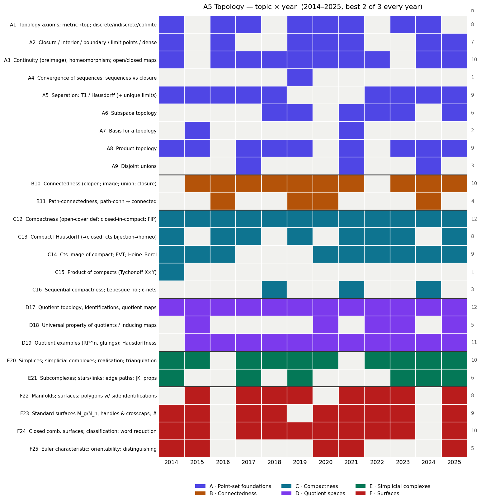

Built from all 12 papers, 2014–2025 (Oxford Part A, paper A5).
Companion files: a5_heatmap.png (topic × year grid),
a5_topic_matrix.csv (the raw matrix). Cross-checked against
the current course notes (tp.html).

A5 topic × year heatmap
0. TL;DR — what I’d bet on for
2026
Format is rock-stable. Every year 2014–2025:
3 questions, answer the best 2, 25 marks each, no
sections. No regime change. The three questions reliably split
as Q1 point-set / connectedness / products, Q2
compactness + quotients, Q3 the geometric question
(simplicial complexes and/or surfaces) — so best-2-of-3 lets
you drop at most one strand.
Quotient spaces and compactness are guaranteed.
Quotient topology / identifications appear in all 12
years; compactness in all 12. These two are
non-negotiable. The single most-tested skill is
identifying a quotient space (“which surface is this?
is it Hausdorff?”) — every year.
The surfaces question rotates with simplicial
complexes. Surface classification appeared in
10/12 years; the only years without surfaces were
2016 (Q3 was quotients) and 2024 (Q3
was simplicial-complex links). After 2024 skipped surfaces, a
classification / boundary-word-reduction question is a
strong 2026 bet.
Reliable bookwork to prove:cts image of
compact is compact / EVT, compact ⊆ Hausdorff ⇒ closed,
the quotient topology is a topology + its universal property,
path-connected ⇒ connected, and the statement of the
classification theorem + definition of an abstract simplicial
complex and its realisation.
Confidence: high on the format and on “a quotient
question + a compactness result every year” (12/12 each);
medium on the E-vs-F rotation in Q3 (surfaces vs
simplicial complexes).
1. The format (stable — bank on
it)
Feature
Every year 2014–2025
Questions
3, answer best 2
Marks
25 each (50 total)
Length
90 minutes (2 hours in 2020, COVID)
Sections
none
The reliable shape of the three questions:
Q1 — point-set / connectedness: connectedness
(clopen / cts-to-{0, 1}), continuity
& homeomorphism, products, separation axioms, sometimes a “point-set
zoo” (cofinite, lower-limit topology). Often paired with a compactness
part.
Q2 — compactness + quotients: compact /
sequentially compact, compact⊆Hausdorff⇒closed, EVT,
plus the quotient topology, quotient maps and an
identification.
Q3 — the geometric question: abstract simplicial
complexes & realisations, and/or surfaces (polygons, words,
the classification theorem, Euler characteristic).
Because you choose any 2 of 3, own two strands cold
and keep a third as insurance. The two safest to own:
compactness + quotients (Q2) and the geometric
question (Q3) — each present essentially every year.
2. ⭐
Bookwork ranked by likelihood (the “what to memorise” list)
Tier 1 —
near-certain, memorise the proof cold
Result
Years proved/asked
Why it’s a lock
Cts image of compact is compact; Extreme Value
Theorem
15, 16, 19, 20, 23, 24 (6×)
The compactness workhorse; the EVT corollary recurs. Short, always
available.
Compact ⊆ Hausdorff ⇒ closed (+ separate a point
from a compact set)
16, 17, 23 (+ used in the homeo criterion 17, 21, 22, 25)
The other half of the compactness core; underlies “cts bijection
compact→Hausdorff is a homeo.”
Quotient topology is a topology; collapsing map cts;
universal property (g
cts ⇔ g ∘ p
cts)
15, 19, 20, 22, 23, 25
Quotients appear every year — this is the bookwork that opens the Q2
quotient half.
Path-connected ⇒ connected (and cts image of
connected is connected)
15, 16, 19, 20, 24
Tiny proofs via the cts-to-{0, 1}
criterion; one almost always appears in Q1.
Statement of the classification theorem +
definition of abstract simplicial complex &
realisation
Q3a, nearly every year
Pure recall marks you cannot afford to drop; state them
verbatim.
Tier 2 —
high; know the proof, expect it in some year
Connectedness lemmas (union with common point;
closure of connected; connected components) — recurring as parts (15,
16, 18, 21).
Closure / interior / boundary / limit points —
appear as computational sub-parts (14, 16, 19, 20, 21, 24, 25),
especially in the cofinite / lower-limit “zoo.”
Basis for a topology (15, 21) — the lower-limit
topology ℝ[a, b) is the
standard vehicle.
ℝℙ2
constructions / models (15, 21) and
Hausdorffness-of-quotients criterion (saturated sets) —
2024, 2025 leaned on these.
Tier 4 — low priority /
situational
One-point compactification (2018) and local
compactness (2022) — appeared as bolt-on parts, slightly beyond
the core notes. Glance at them; don’t over-invest.
Compute / use Euler characteristic to identify or
distinguish a surface
14, 15, 20, 21, 25
χ = V − E + F;
χ(Mg) = 2 − 2g,
χ(Nh) = 2 − h;
pair with orientability
“Is this space compact / connected / Hausdorff?”
zoo
16, 17, 19, 21, 22
cofinite, lower-limit ℝ[a, b),
products, indiscrete — test each property from the definition
Build/recognise a simplicial complex with given
realisation; links & stars
14, 19, 20, 22, 24
star is open; link of a surface vertex is a circle; |K| compact iff finite
Homeomorphic-or-not of explicit subspaces (e.g. of
[0, 1]2, 𝔻2)
14, 22, 23
compactness / connectedness / cut-point invariants; local
compactness (2022)
Prediction: at least one
quotient-identification part and one
surface/word-reduction part. Have the boundary-word
toolkit and the “χ +
orientability ⇒ which surface” routine ready to run end-to-end.
4. Trends &
rotation (where the asymmetric bets are)
Q3 rotates E ↔︎ F. Surfaces (classification, words,
χ) carried Q3 in
14,15,17,18,20,21,23,25; simplicial complexes carried
it in 2024 (links, subcomplexes — no surfaces) and 2019 leaned
simplicial; 2016 had neither (Q3 was quotients). After
2024’s simplicial-only Q3, surfaces are due in
2026.
Recent papers are more point-set / proof-heavy.
2024–25 emphasised saturated sets, closed maps, links, and
metric-compactness (Lebesgue/d(a, F)) over pure
recall. Expect rigour, not just definitions.
Quotients keep widening. Beyond standard gluings:
ℝ/ℚ indiscrete, Hawaiian earring
(2021), S2-quotients (2022),
Hausdorffness-via-saturated-sets and closed-map criteria (2024, 2025).
Know why a quotient is/ isn’t Hausdorff.
Own two strands cold, keep a third as backup.
Safest pair: compactness + quotients (Q2) and
the geometric Q3 (have both simplicial
complexes and surfaces ready, since Q3 rotates). Use
connectedness/point-set (Q1) as the insurance
third.
Memorise cold (Tier 1): cts image of compact / EVT;
compact⊆Hausdorff⇒closed; the quotient topology + universal property;
path-conn⇒conn; the classification-theorem statement +
simplicial-complex definitions.
Drill, don’t memorise (the construction toolkit):
quotient identification (via 2.25), boundary-word reduction to Mg/Nh,
Euler-characteristic + orientability, the compact/connected/Hausdorff
“zoo,” links & stars.
Two concrete 2026 bets: (i) a
quotient-identification question (every year) and (ii)
a surfaces / classification question (overdue after
2024). Prepare both end-to-end.
Caveat: predictions are pattern-extrapolation from 12 papers plus
the current notes. The format call is as safe as it
gets (no change in 12 years); the Q3 rotation (surfaces
returning in 2026) is a softer, few-year signal — sanity-check against
your problem sheets and lecturer guidance.